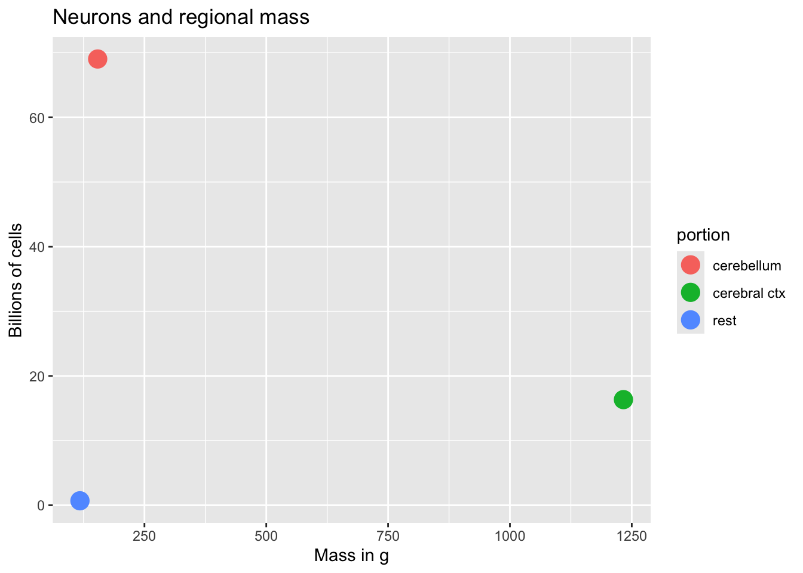
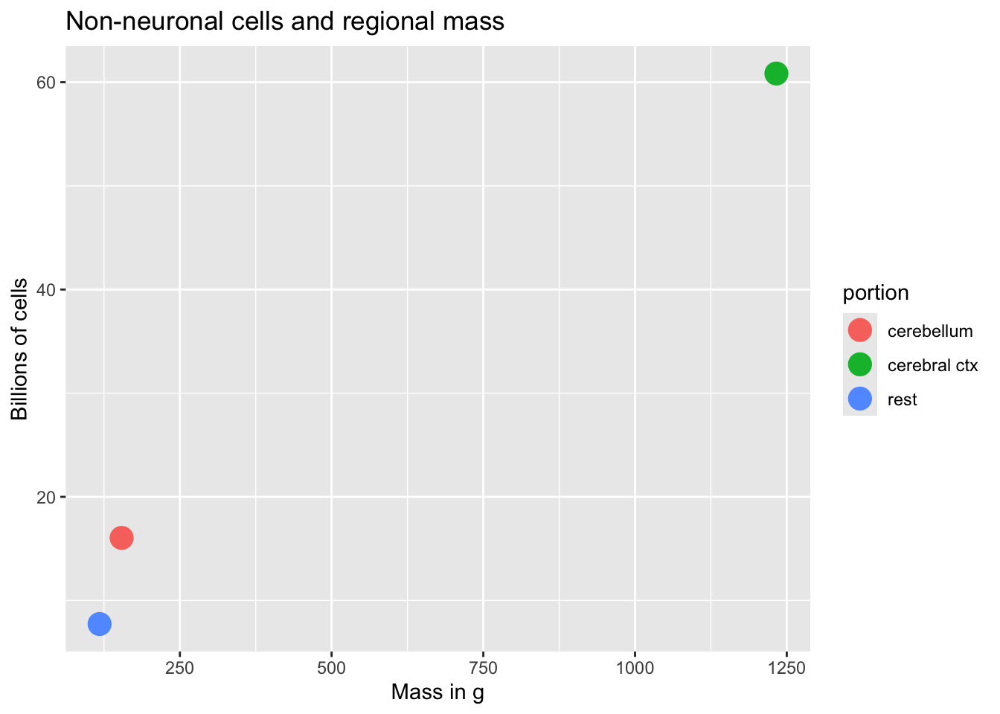

Cellular neuroscience
Why animals need nervous systems
- Escherichia Coli (E. Coli)
- Tiny, single-celled bacterium
- Feeds on glucose
- Chemo (“taste”) receptors on surface membrane
- Flagellum for movement
- Food concentration regulates duration of “move” phase
- ~4 ms for chemical signal to diffuse from anterior/posterior
- Paramecium
- 300K larger than E. Coli
- Propulsion through coordinated beating of cilia
- Diffusion from head to tail ~40 s!
- Use electrical signaling instead
- \(Na^+\) channel opens (e.g., when stretched)
- Voltage-gated \(Ca^{++}\) channels open, \(Ca^{++}\) enters, triggers cilia
- Signal across cell within ms
C Elegans swimming.
- Caenorhabditis Elegans (C. Elegans)
- ~10x larger than paramecium
- 302 neurons + 56 glial cells (out of 959)
- Swim, forage, mate
Neural communication types
- Electrical
- Fast(er) (10-100x)
- Within neurons
- From one part of body to another
- Point-to-point connections for specificity
- Metabolically costly to create & maintain
- How to reliably send a message from here to there?
- Chemical
- Diffusion slow(er)
- Within & between neurons
- or other cells
- Molecular matching (binding) for specificity
- Metabolically efficient
So, why do large/complex animals need nervous systems?
Cellular neuroanatomy
How many neurons and glia?
- Old “lore”: ~100 billion neurons
- New estimate (Azevedo et al., 2009):
- ~86 +/- 8 billion neurons
- ~85 +/- 9 billion glia
“These findings challenge the common view that humans stand out from other primates in their brain composition and indicate that, with regard to numbers of neuronal and nonneuronal cells, the human brain is an isometrically scaled-up primate brain.”
[@azevedo2009equal]

Glia (neuroglia)
- Functions
- Structural support
- Metabolic support
- Brain development
Astrocytes
- “Star-shaped”
- Probably most numerous cell type in CNS
- Physical and metabolic support
- Support blood/brain barrier
- Regulate local blood flow


- Interact with neurons
- Ion (Ca++/K+) buffering
- Neurotransmitter (e.g., glutamate) buffering

- Shape brain development, contribute to synaptic plasticity
- Disruption linked to cognitive impairment, disease (Chung, Welsh, Barres, & Stevens, 2015)
Myelinating cells
Oligodendrocytes
- In brain and spinal cord (CNS)
- 1:many neurons


Schwann cells
- In PNS
- 1:1 neuron
- Facilitate neuro-regeneration


- TV show preference mnemonics: COPS/SPOC
Microglia
- Phagocytosis
- Clean-up damaged, dead tissue
- Role in ‘pruning’ of synapses in normal development

Neurons
What makes neurons “special”
- Long-lived (most generated b/w 3-25 weeks gestational age)
- Extended branching (dendrites and axons)
- Electrically excitable
- Connect to small #s of other cells via synapses
- Release neurotransmitters
Macrostructure
- Dendrites
- Soma
- Axons
- Terminal buttons (boutons)

Dendrites
- Majority of input to neuron
- Passive (do not generate current flows) vs. active (generate current flows like axons)
- “Polarized” or directional information flow

Dendritic Spines

- Concentrate effects of local current flows, biochemical reactions
Soma (cell body)
- Varied shapes
- Nucleus
- Chromosomes
- Organelles
- Mitochondria
- Smooth and Rough Endoplasmic reticulum (ER)
Axons
Axon hillock
- Transitional zone between soma and axon
Initial segment
- Action potential generated
Nodes of Ranvier
- Gaps in myelin sheath
- Neuronal membrane exposed to extracellular space
- Action potential regenerates
Axon terminals
Synaptic bouton (terminal button)
- Synapse (~5-10K per neuron)
- Pre- (sending side) and postsynaptic (receiving side) membranes
- Synaptic cleft
- Synaptic vesicles
- Store/release neurotransmitters

- Autoreceptors & transporters

Classifying neurons
- Functional role
- Input (sensory), output (motor/secretory), interneurons
- Anatomy
- Unipolar
- Bipolar
- Multipolar

- By specific anatomy
- Pyramidal cells
- Stellate cells
- Purkinje cells
- Granule cells


Morphology, physiology, gene transcription


Neurophysiology
Electrical communication
- Electrical potential (== voltage)
- Think of potential energy
- Voltage ~ pressure
- Energy that will be released if something changes
Basic principles
\[E = IR\]
- Current flow (\(I\)) across membrane
- Membrane varies in resistance (\(R\)) or permeability (\(1/R\)) to ion flow
- Product \(IR\) is electrical voltage \(E\)

- Membrane stores (& releases) charge like capacitor

Resting potential
- Potential energy
- Energy that could be released if circumstances change

- Measurement
- Electrode on inside
- Electrode on outside (reference)
- Inside - Outside = potential

- Neuron (and other cells) have potential energy
- Inside is -60-70 mV, with respect to outside
- ~1/20th typical \(1.5V\) AAA battery
- Like charges repel, opposites attract, so
- Positively charged particles pulled in
- Negatively charged particles pushed out
Contributors to
- Ions
- Potassium, \(K^+\)
- Sodium, \(Na^+\)
- Chloride, \(Cl^-\)
- Calcium, \(Ca^{++}\)
- Organic anions, \(A^-\)
- Ion channels
- Separation between charges
- A balance of forces
Party metaphor
- Annie (\(A^-\)) was having a party.
- Used to date Nate (\(Na^+\)), but now sees Karl (\(K^+\))
- Hired bouncers called
- “The Channels”
- Let Karl and friends in or out, keep Nate out
- Annie’s friends (\(A^-\)) and Karl’s (\(K^+\)) mostly inside
- Nate and friends (\(Na^+\)) mostly outside
- Claude/Claudia (\(Cl^-\)) tagging along

Ion channels
- Macromolecules that form openings in membrane
- Different types of subunits

- Selective (bind only to some substances, not others)
- Vary in permeability (allow some substances to pass more than others)
- Types
- Passive/leak
- Voltage-gated
- Ligand-gated (chemically-gated)
- Transporters

Conditions
Neuron at rest permeable to \(K^+\)
- Passive \(K^+\) channels open
- \([K^+]_{i} >> [K^+]_{o}\)
- \(K^+\) flows out


- Force of diffusion
- \(K^+\) moves from high concentration (~140 mM inside) to low (~4 mM outside)
- \(K^+\) outflow would stop when \([K^+]_{o} == [K^2]_{i}\)
- But…
- Na/Ka-ATPase (Na/K Pump)
- Keeps concentration gradients
- Moves \(K+\) in, \(Na+\) out
- Electrostatic pressure
- \(K^+\) has + electric charge
- Movement of charged \(K^+\) ions creates current
- Movement of charged \(K^+\) ions creates charge separation
- Some \(A^-\) no longer have matching \(K^+\)
- Charge separation across membrane creates voltage (~ capacitor)
- Voltage build-up stops \(K^+\) outflow
- Voltage magnitude called “reversal potential” or equilibrium potential
- \(K^+\) positive, so reversal potential negative (w/ respect to outside)
- \(K^+\) reversal potential (~90mV) close to, but more negative than neuron resting potential (-70mV)
Equilibrium potential and the Nernst equation

Neuron at resting potential has low \(Na^+\) permeability
\(Na^+\) concentrated outside neuron (\([Na^+]_{o}\)~145 mM) vs. inside (\([Na^+]_{i}\)~12 mM)
Equilibrium potential is positive (with respect to outside)
Some \(Na^+\) flows in
Calculate net effects of ion flow across membrane via
Goldman-Hodgkin-Katz equation


Summary of forces
| Ion | Concentration gradient | Force of diffusion | Sign of electrostatic force |
|---|---|---|---|
| \(K^+\) | \([K^+]_{i} >> [K^+]_{o}\) | outward | - |
| \(Na^+\) | \([Na^+]_{i} << [Na^+]_{o}\) | inward | - |
- “Driving Force” on a given ion depends on its equilibrium potential AND current membrane potential.
- Driving force >> if membrane potential far from equilibrium potential for ion.
- Equilibrium potential
- Voltage that keeps current (inside/outside) concentrations the same
- Voltage membrane potential will approach if only that ion flows
Under typical conditions
| Ion | [inside] | [outside] | Voltage |
|---|---|---|---|
| \(K^+\) | ~150 mM | ~4 mM | ~ -90 mV |
| \(Na^+\) | ~10 mM | ~140 mM | ~ +55-60 mV |
| \(Cl-\) | ~10 mM | ~110 mM | - 65-80 mV |
Action potential

- Rapid rise, fall of membrane potential
- Threshold of excitation
- Increase (rising phase/depolarization)
- Peak
- at positive voltage
- Decline (falling phase/repolarization)
- Return to resting potential (refractory period)
Note
The \(K^+\) story
- \(Na^+\)/\(K^+\) pump pulls \(K^+\) in
- \([K^+]_{in}\) (~150 mM) >> \([K^+]_{out}\) (~4 mM)
- Outward flow of \(K^+\) through passive/leak channels
- Outflow stops when membrane potential, \(V_m\) = equilibrium potential for \(K^+\)
Equilibrium potential
- Voltage (\(V_{K}\)) that keeps system in equilibrium
- \([K^+]_{in}\) >> \([K^+]_{out}\)
- Nernst equation
- \(V_{K}\) = \(\frac{RT}{(+1)F}ln(\frac{[K^+]_{out}}{[K^+]_{in}})\)
- \(V_{K}\) = ~ -90 mV
- Negative in/positive out keeps in/out concentration gradient
- \(K^+\) flows out through passive/leak channels; most remains near membrane
- Separation from \(A^-\) creates charge \(\frac{K+K+K+K+K+}{A-A-A-A-A-}\) along capacitor-like membrane
- \(V_m\) -> \(V_{K}\)
The \(Na^+\) story
- \(Na^+\)/\(K^+\) pump pushes \(Na^+\) out
- \([Na^+]_{in}\) (~10 mM) << \([Na^+]_{out}\) (~140 mM)
- Equilibrium potential for \(Na^+\), \(V_{Na}\) = ~ +55 mV
- Inside positive/outside negative to maintain outside > inside concentration gradient
- If \(Na^+\) alone, \(V_m\) -> \(V_{Na}\) (~ +55 mV)
“Resting” potential
- Sum of outward \(K^+\) and inward \(Na^+\)
- Membrane more permeable to \(K^+\) than \(Na^+\), \(p_{\)K+}\(>\)p_{Na+}$
- Outward flow of \(K^+\) > inward flow of \(Na^+\)
- Resting potential (~-70 mV) closer to \(V_{K}\) (-90 mV) than \(V_{Na}\) (+55 mV)
- Goldman-Hodgkin-Katz equation
- \(V_m = \frac{RT}{F}ln(\frac{p_{K^+}[K^+]_{out}+p_{Na^+}[Na^+]_{out}}{p_{K^+}[K^+]_{in}+p_{Na^+}[Na^+]_{in}})\)
Components
| Phase | Neuron State |
|---|---|
| Resting potential | Passive \(K^+\) allow outward flow; passive \(Na^+\) allow inward flow; \(Na^+\)/\(K^+\) moves \(K^+\) in and \(Na^+\) out |
| Rise to threshold | + input makes membrane potential more + |
| Rising phase | Voltage-gated \(Na^+\) channels open, \(Na^+\) enters |
| Peak | Voltage-gated \(Na^+\) channels close and deactivate; voltage-gated \(K^+\) channels open |
| Falling phase | \(K^+\) exits |
| Refractory period | \(Na^+\)/\(K^+\) pump restores [\(Na^+\)], [\(K^+\)]; voltage-gated \(K^+\) channels close |
| Resting potential | Passive \(K^+\) allow outward flow; passive \(Na^+\) allow inward flow; \(Na^+\)/\(K^+\) moves \(K^+\) in and \(Na^+\) out |
knitr::include_graphics("https://upload.wikimedia.org/wikipedia/commons/thumb/4/4a/Action_potential.svg/300px-Action_potential.svg.png")
knitr::include_graphics("http://hyperphysics.phy-astr.gsu.edu/hbase/Biology/imgbio/actpot4.gif")
Neuron at rest
- Driving force on \(K^+\) weakly outward
- -70 mV - (-90 mV) = +20 mV
- Driving force on \(Na^+\) strongly inward
- -70 mV - (+55 mV) = -125 mV
- \(Na^+\)/\(K^+\) pump maintains concentrations (\(Na^2\) out; \(K^+\) in)
- \([K^+]_{i} >> [K^+]_{o}\)
- \([Na^+]_{i} << [Na^+]_{o}\)
| Phase | Ion | Driving force | Flow direction | Flow magnitude |
|---|---|---|---|---|
| Rest | \(K^+\) | 20 mV | out | small |
| \(Na^+\) | 125 mV | in | small |
Rising phase
- Voltage-gated \(Na^+\) channels open
- Membrane permeability to \(Na^+\) increases
- \(Na^+\) inflow through passive + voltage-gated channels
- continued \(K^+\) outflow through passive channels
| Phase | Ion | Driving force | Flow direction | Flow magnitude |
|---|---|---|---|---|
| Rising | \(K^+\) | growing | out | growing |
| \(Na^+\) | shrinking | in | high |
Peak
- Membrane permeability to \(Na^+\) reverts to resting state
- Voltage-gated \(Na^+\) channels close & inactivate
- Slow inflow due to small driving force (+30 mV - 55mV = -25 mv)
- Membrane permeability to \(K^+\) increases
- Voltage-gated \(K^+\) channels open
- Fast outflow due to strong driving force (+30 mv - (-90 mv) = +120 mV)
| Phase | Ion | Driving force | Flow direction | Flow magnitude |
|---|---|---|---|---|
| Peak | \(K^+\) | 120 mV | out | high |
| \(Na^+\) | 20 mV | in | small |
Falling phase
- \(K^+\) outflow
- Through voltage-gated \(K^+\) and passive \(K^+\) channels
- \(Na^+\) inflow
- Through passive channels only
| Phase | Ion | Driving force | Flow direction | Flow magnitude |
|---|---|---|---|---|
| Falling | K | shrinking | out | high |
| \(Na^+\) | growing | in | small |
Refractory phase
Absolute
- Cannot generate action potential (AP) no matter the size of the stimulus
- Membrane potential more negative (-90 mV) than at rest (-70 mV)
- Voltage-gated \(Na^+\) channels still inactivated
- Driving force on \(Na^+\) high (-90 mv - 55 mV = -145 mV), but too bad
- Voltage-gated \(K^+\) channels closing
- Driving force on \(K^+\) tiny or absent
- \(Na^+\)/\(K^+\) pump restoring concentration balance
Relative
- Can generate AP with larg(er) stimulus
- Some voltage-gated \(Na^+\) ‘de-inactivate’, can open if
- Larger input
- Membrane potential is more negative than resting potential
| Phase | Ion | Driving force | Flow direction | Flow magnitude |
|---|---|---|---|---|
| Refractory | K | ~0 mV | out | small |
| \(Na^+\) | 145 mV | in | small |
APs and Information Processing
- AP amplitudes don’t vary (much)
- All or none
- \(V_{K}\) and \(V_{Na}\) don’t vary much b/c \(Na^+\)/\(K^+\) pump always working
- AP frequency and timing vary
- Rate vs. timing codes
- Same rates, but different timing
- “Grandmother” cells and single spikes

Generating action potentials
- Axon hillock
- Portion of soma adjacent to axon
- Integrates/sums input to soma
- Axon initial segment
- Umyelinated portion of axon adjacent to soma
- Voltage-gated \(Na^+\) and \(K^+\) channels exposed
- If sum of input to soma > threshold, voltage-gated \(Na^+\) channels open

Propagation
- Propagation
- move down axon, away from soma, toward axon terminals.
- Unmyelinated axon
- Each segment “excites” the next
- Myelinated axon
- AP “jumps” between Nodes of Ranvier –> saltatory conduction
- Nodes of Ranvier == unmyelinated sections of axon
- voltage-gated \(Na^+\), \(K^+\) channels exposed
- Current flows through myelinated segments
- Why does AP flow in one direction, away from soma?
- Soma does not have (many) voltage-gated \(Na^+\) channels.
- Soma is not myelinated.
- Refractory periods mean polarization only in one direction.
Conduction velocities
Hodgkin-Huxley Equations
- Measuring APs in actual neurons. https://www.youtube.com/embed/k48jXzFGMc8
- Interview with Sir Alan Hodgkin, https://www.youtube.com/embed/vSIXbfunHYg
- Simulations
Synaptic transmission
Synapse permits neuron to pass electrical or chemical messages to another neuron or target cell (muscle, gland, etc.)
Synapse Types & Locations
- Chemical
- Electrical
- Gap junctions
- Cytosol (and ionic current) flows through adjacent neurons

Steps in chemical transmission
- Voltage-gated calcium Ca++ channels open
- \(Ca^{++}\) influx causes synaptic vesicles to bind with presynaptic membrane, fuse with membrane, spill contents via exocytosis


knitr::include_graphics("https://ars.els-cdn.com/content/image/1-s2.0-S0143416017301495-fx1.jpg")

- NTs diffuse across synaptic cleft
- NTs bind with receptors on postsynaptic membrane
- Cause some post-synaptic effect
- NTs unbind from receptor
- NTs inactivated
- NTs diffuse along concentration gradient

Relative sizes
- Neural membrane ~8 nm
- Synaptic vesicles ~40-60 or ~90-120 nm
- Synaptic cleft ~20-50 nm
- Cleft small relative to vesicles
Receptor/channel types
Leak/passive
- Vary in selectivity, permeability
Transporters/exchangers
- Ionic
- \(Na^+\)/\(K^+\) ATP-ase/pump
- Chemical
- e.g., Dopamine transporter (DAT)
Ionotropic receptors (receptor + ion channel)
- Ligand-gated
- Open/close channel
- Ions flow in/out depending on membrane voltage and ion type
- Fast-responding (< 2 ms), but short-duration effects (< 100 ms)
Metabotropic receptors (receptor only)
- G-proteins ->
- Trigger 2nd messengers
- Open/close adjacent channels, change metabolism

Receptors generate postsynaptic potentials (PSPs)
- Small voltage changes
- Amplitude scales with # of receptors activated
- Excitatory PSPs (EPSPs)
- Depolarize neuron (make more +)
- Inhibitory (IPSPs)
- Hyperpolarize neuron (make more -)
NTs inactivated
- Buffering
- e.g., glutamate into astrocytes (Anderson & Swanson, 2000)
- Reuptake via transporters
- e.g., serotonin via serotonin transporter (SERT)
- Enzymatic degradation
- e.g., acetylcholine esterase (AChE) degrades acetylcholine (ACh)
Questions to ponder
- Why do NTs diffuse from pre- to post-synaptic membrane?
- Why must NTs be inactivated?
- What sort of PSP would opening a \(Na^+\) channel produce?
- What sort of PSP would opening a \(Cl^-\) channel produce?
- What sort of PSP would closing a \(K^+\) produce?
Synapse location and function

- on dendrites
- usually excitatory
- on cell bodies
- usually inhibitory
- on axons
- usually modulatory (change p(fire))
References
Anderson, C. M., & Swanson, R. A. (2000). Astrocyte glutamate transport: Review of properties, regulation, and physiological functions. Glia, 32(1), 1–14. https://doi.org/10.1002/1098-1136(200010)32:1<1::AID-GLIA10>3.0.CO;2-W
Azevedo, F. A., Carvalho, L. R., Grinberg, L. T., Farfel, J. M., Ferretti, R. E., Leite, R. E., et al.others. (2009). Equal numbers of neuronal and nonneuronal cells make the human brain an isometrically scaled-up primate brain. Journal of Comparative Neurology, 513(5), 532–541. https://doi.org/10.1002/cne.21974
Boldog, E., Bakken, T. E., Hodge, R. D., Novotny, M., Aevermann, B. D., Baka, J., … Tamás, G. (2018). Transcriptomic and morphophysiological evidence for a specialized human cortical GABAergic cell type. Nature Neuroscience, 21(9), 1185–1195. https://doi.org/10.1038/s41593-018-0205-2
Chung, W.-S., Welsh, C. A., Barres, B. A., & Stevens, B. (2015). Do glia drive synaptic and cognitive impairment in disease? Nature Neuroscience, 18(11), 1539–1545. https://doi.org/10.1038/nn.4142
Eyherabide, H. G., Rokem, A., Herz, A. V. M., Samengo, I., Eyherabide, H. G., Rokem, A., … Samengo, I. (2009). Bursts generate a non-reducible spike-pattern code. Frontiers in Neuroscience, 3, 1. https://doi.org/10.3389/neuro.01.002.2009
Hastoy, B., Clark, A., Rorsman, P., & Lang, J. (2017). Fusion pore in exocytosis: More than an exit gate? A \(\beta\)-cell perspective. Cell Calcium, 68, 45–61. https://doi.org/10.1016/j.ceca.2017.10.005
Haucke, V., Neher, E., & Sigrist, S. J. (2011). Protein scaffolds in the coupling of synaptic exocytosis and endocytosis. Nature Reviews. Neuroscience, 12(3), 127–138. https://doi.org/10.1038/nrn2948
Moss, S. J., & Smart, T. G. (2001). Constructing inhibitory synapses. Nature Reviews. Neuroscience, 2(4), 240–250. https://doi.org/10.1038/35067500
Torres, G. E., Gainetdinov, R. R., & Caron, M. G. (2003). Plasma membrane monoamine transporters: Structure, regulation and function. Nature Reviews. Neuroscience, 4(1), 13–25. https://doi.org/10.1038/nrn1008
Zeng, H., & Sanes, J. R. (2017). Neuronal cell-type classification: Challenges, opportunities and the path forward. Nature Reviews. Neuroscience. https://doi.org/10.1038/nrn.2017.85